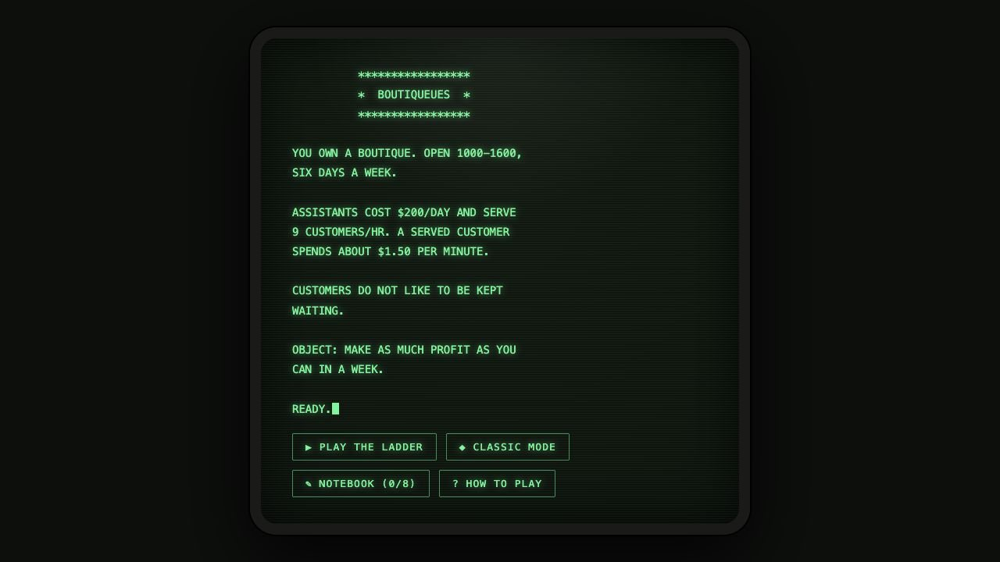
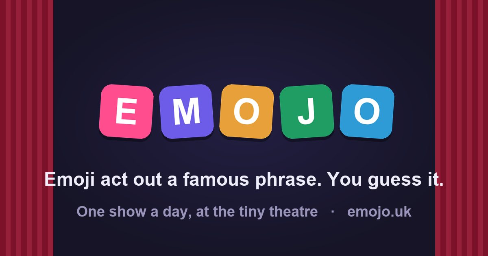

Work
Projects
Games, tools, creative practices and exhibitions shaped by curiosity, play and language.
Games & experiments
Small systems made for play

Language game
Always Never
Improvise a strange proverb with a stubborn fictional Sage.
View project
Poetry game
Haiku Craft
Restore a scattered daily haiku—or write one for someone else to solve.
View project
Strategy game
Boutiqueues
A 1984 queue-theory game restaged as a tiny after-hours boutique.
View project
Daily puzzle
Emojo
A tiny daily theatre where emoji perform the clues.
View projectTools & systems
Software shaped by real practice
Art & performance
Objects, images and shared spaces